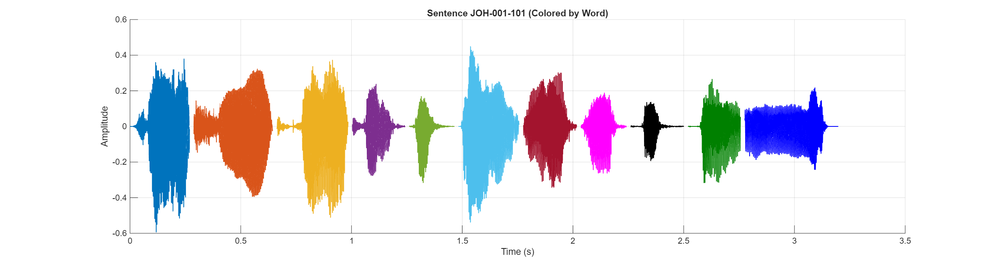

Sentence Audio:
Waveform:
| # | ID | Hanji | POJ |
|---|---|---|---|
| 1 | JOH-001-101-0003 | 諸個 | Chiah-ê |
| 2 | JOH-001-101-0004 | 事 | sū |
| 3 | JOH-001-101-0005 | 行 | kiâⁿ |
| 4 | JOH-001-101-0006 | 佇 | tī |
| 5 | JOH-001-101-0007 | 約 | Iok |
| 6 | JOH-001-101-0008 | 但 | tàn |
| 7 | JOH-001-101-0009 | 外 | gōa |
| 8 | JOH-001-101-0010 | 的 | ê |
| 9 | JOH-001-101-0011 | 伯 | Pek |
| 10 | JOH-001-101-0012 | 大 | tāi |
| 11 | JOH-001-101-0013 | 尼 | nî |